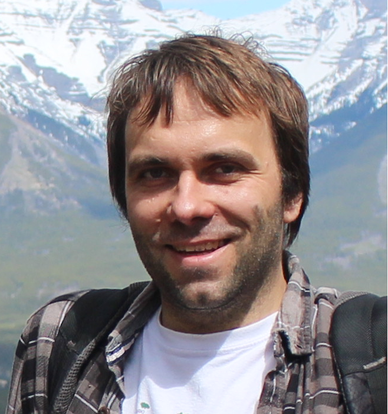

Paweł Dłotko
 I am the leader of the Dioscuri Centre in Topological Data Analysis. Previously I was working in Swansea University (UK), Inria Saclay, University of Pennsylvania and Jagiellonian University (from which I graduated in 2012). Please see my CV for further details as well as the list of papers, talks, grants and software packages I have created.I believe that mathematics needs applied sciences for inspiration and new important problems. Applied sciences needs mathematics to provide rigorous solutions to those problems. Those solutions need to be effectively implemented to make a real difference.
This philosophy determined the way I am doing my research - in interdisciplinary way, somewhere between mathematics, computer science and applied science. If you would like to talk, work with me, or join my group, please drop me a line!
How to find me?
Dioscuri Centre in Topological Data AnalysisInstytut Matematyczny PAN, Room 17
Sniadeckich 8, 00-656 Warszawa
ORCID
Publications
Google ScholarBibTeX